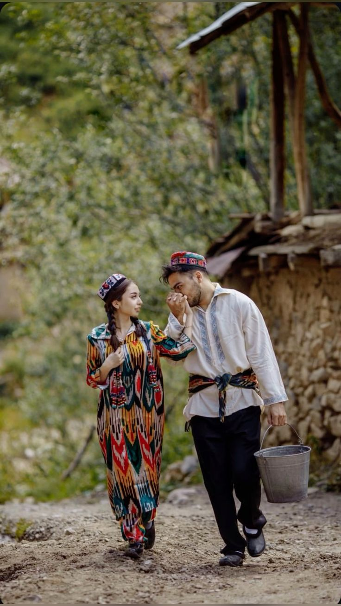
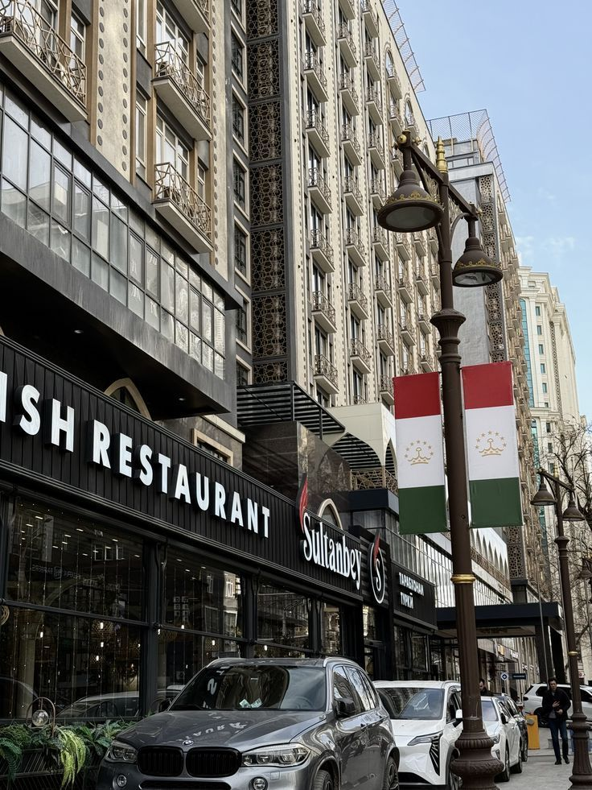

TAJIKISTAN · ABDULLO GAFUROV
Tajikistan
My home, shared with you.

02 / 24
The Pamirs
Mountains shape our home.
03 / 24
Rivers of life
Snow becomes water for our valleys.

04 / 24
Iskanderkul
A blue lake in the Fann Mountains.

05 / 24
Hissar Fortress
An old fort near our capital.

06 / 24
Sarazm
People lived and traded here long ago.


07 / 24
Dushanbe
Our capital is green and growing.


12 / 24
Navruz
We welcome spring together.


14 / 24
A warm welcome
Guests are always offered tea.
15 / 24
Tea and tradition
A small cup brings people together.

16 / 24
Qurutob
A favorite meal, made to share.


17 / 24
Palov for everyone
We gather around one big plate.

21 / 24
Patterns by hand
Crafts keep old patterns alive.


23 / 24
Music of the mountains
Strings and songs tell our stories.

24 / 24
Thank you
I am happy to share my home.